التغطية الأعلامية
للدورة رقم ( 29 ) للجمعية العمومية للإتحاد العربى للمحاربين القدماء وضحايا الحرب
المنعقدة فى دولة المقر ( جمهورية مصر العربية )
الفترة من 04 / 05 / 2025 إلى 06/05/2025
تحت شعار معاً للسلام
وقد تمت تغطية الحدث عبر الصحف المصرية والدول العربية .
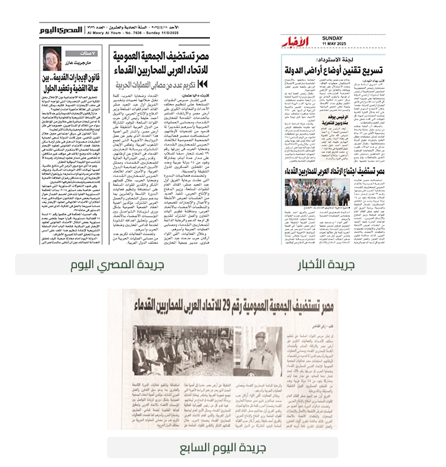
أنعقدت فاعليات الدورة التاسعة والعشرون للجمعية العمومية للإتحاد العربى ( الهيئة العليا للإتحاد )
خلال ثلاثة أيام متتالية بدار قوات الدفاع الجوى ( النزهة)
• شارك فى فاعليات الدورة . . السادة رؤساء وأعضاء الوفود المشاركة . . . السادة الملحقين العسكريين
بالسفارات وبعض الشخصيات العامة أعضاء الإتحاد .
• إجمالى الدول المشاركة بالدورة عدد (14) من إجمالى عدد ( 18 ) بنسبة مشاركة وحضور ( 77%) ولم يحضر كل
من
- الجمهورية العربية السورية
- المملكة العربية السعــــودية
- الجمهورية الجزائرية الديمقراطية الشعبية
- جمهورية اليمن
وحضرت جمهورية جيبوتى كمراقب فى الدورة رقم ( 29 ) للجمعية العمومية للإتحاد العربى للمحاربين القدماء
وضحايا الحرب
وقد تم إستقبال الوفود الخاصة بالمنظمات المشاركة فى الدورة ( 29 )
يومى الجمعة و السبت الموافق 03 / 05 / 2025 م بدار قوات الدفاع الجوى ( النزهة ) من قبل الامانة العامة
للإتحاد
والترحاب بهم فى وطنهم الثانى جمهورية مصر العربية
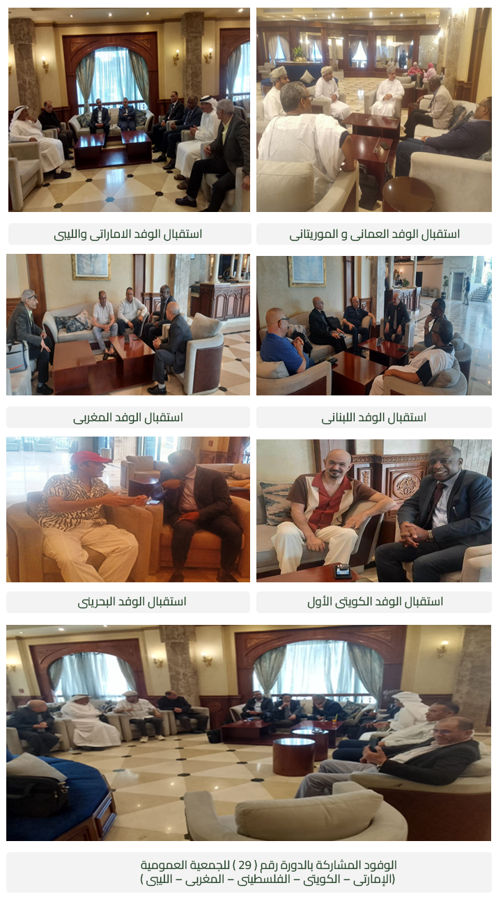
تضمنت فاعليات الدورة
عدد ( 10 ) جلسات على مدارثلاثة أيام متتالية
وفقاً للبرنامج الزمنى الأتى :
اليوم الأول من فاعليات الدورة رقم ( 29 ) للجمعية العمومية
للإتحاد العربى للمحاربين القدماء
الأحد الموافق 04 / 05 / 2025
مراسم الجلسة الأولى الأفتتاحية :-
تتضمن كلمة كلاً من :
1- رئيس الدورة ( مدير جمعية المحاربين القدماء المصرية ) .
2- رئيس إتحادالفيدرالية العالمية للمحاربين القدماء .
3- ممثل الأمين العام لجامعة الدول العربية .
4- الأمين العام للإتحاد العربى للمحاربين القدماء وضحايا الحرب .
الجلسة الثانية للجمعية العمومية :-
تتضمن :
1- افتتاح وتسمية أعضاء الوفود المشاركة من الدول المختلفة .
2- عرض تقرير الأمين العام والأستراتيجية العربية المقترحة .
3- عرض تقرير أمين الصندوق .
الجلسة الثالثة للجمعية العمومية :-
تتضمن :
1- إنتخاب رئيس الإتحاد والأمانة العامة للإتحاد ونواب الرئيس .
2- إنتخاب المفوض المالى للجمعية العمومية .
3- إختيار مقررى الجلسات ورؤساء وأعضاء اللجان الفرعية وتوزيع المشاريع .
4- كلمة لرئيس الإتحاد المنتخب .
( وفى نهاية اليوم تم التحرك لتناول وجبة عشاء على الباخرة النيلية يوم الأثنين الموافق 05 / 05 / 2025 )
الجلسة الرابعة والخامسة للجمعية العمومية العمومية :-
تم خلالها :
1- عقد اللجنة ( أ ) والمختصة بدراسة مشروعات القرارات ( المالية والإدارية ) .
2- عقد اللجنة ( ب ) المختصة بدراسة مشروعات القرارات الخاصة بالقضايا العربية .
3- القيام بزيارة إلى جمعية المحاربين القدماء المصرية.
(
وفى نهاية اليوم تم دعوة جميع المنظمات المشاركة من الدول العربية المختلفة
لحضور حفل عشاء مجمع بدار الدفاع الجوى فندق تيبا روز جاردن ،
ومن ثم حضور تخت عربى أصيل مع نسمات الهواء الجميله على حمام السباحة
) .
الثلاثاء الموافق 06 / 05 / 2025
الجلسة السادسة / السابعة / الثامنة ، للجمعية العمومية :-
تتضمن :
1- عرض تقارير اللجان الفرعية ( أ. ب ) وإتخاذ القرارات والتوصيات .
2- دراسة وتعديل فقرة فى اللائحة الأساسية للإتحاد .
3- عرض أنشطة وأعمال وإنجازات أعضاء الإتحاد ( المملكة الأدرنية الهاشمية ) .
الجلسة التاسعة للجمعية العمومية :-
تتضمن :
1- موافاة الأمانة بموافقة سلطنة عمان على عقد الدورة رقم ( 30 ) لإتخاذ الإجراءات اللازمة .
2- إختيار الأم المثالية .
3- توزيع جوائز الإتحاد .
الجلسة العاشرة والختامية ، للجمعية العمومية :-
تتضمن :
1- تبادل الهدايا بين المنظمات والجمعيات والإدارات أعضاء الإتحاد .
2- تكريم المصابين المقاتلين العرب .
3- تورزيع هدايا الورقة البحثية .
4- عرض التقرير الختامى .
5- التحرك لزيارة المتحف الكبير .
اليوم الأول
2025/05/04
1- الجلسه الافتتاحية .
2- الجلسه الثانية للجمعية العمومية .
3- الجلسه الثالثة للجمعية العمومية .
و تضمنت الجلسة الأفتتاحية :
كلمة الترحيب بالسادة رؤساء وأعضاء الوفود المشاركين فى الدورة .
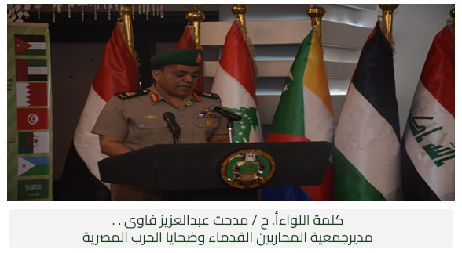
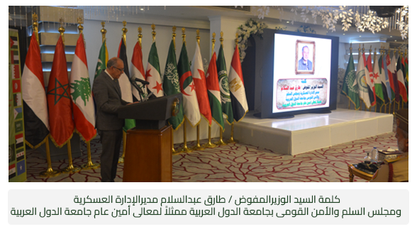
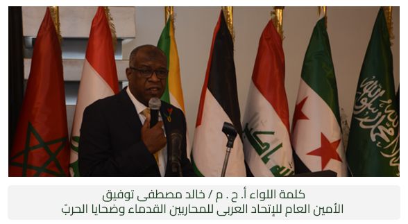
وقد شرفت الجلسة بحضور كل من :
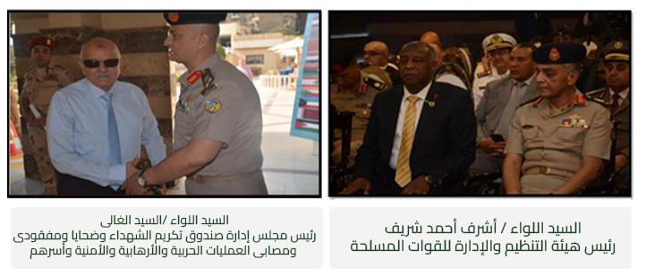
إختتام الجلسة الإفتتاحية و التقاط الصورة التذكارية :
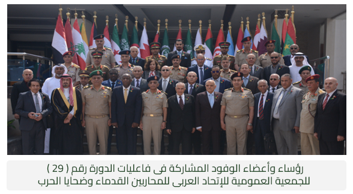
الجلسة الثانية ،
للجمعية العمومية ( 29 ):-
تم إفتتاح الجلسة وتسمية رؤساء و أعضاء الوفود : وعددهم (14) دولة .
وخلال الجلسة الثانية ،
تم عرض تقرير الأمين العام والذى تضمن :-
البند الأول :- الأنشطة والأعمال التى تم تنفيذها .
البند الثاني :- الملامح الرئيسية للإستراتيجية العربية .
البند الثالث :- المقترحــــــات .
البند الرابع :- المطــــــــــالب .
البند الأول : الأنشطة والأعمال التى تم تنفيذها .
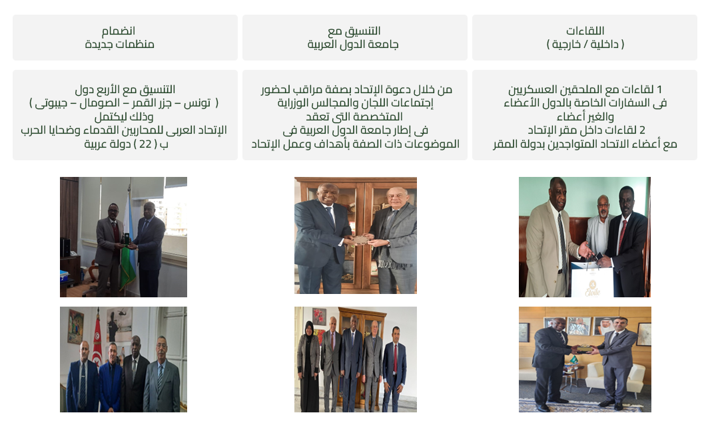
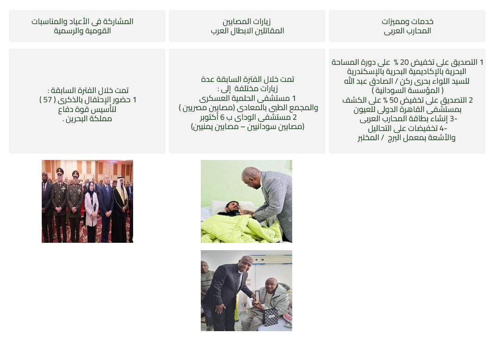
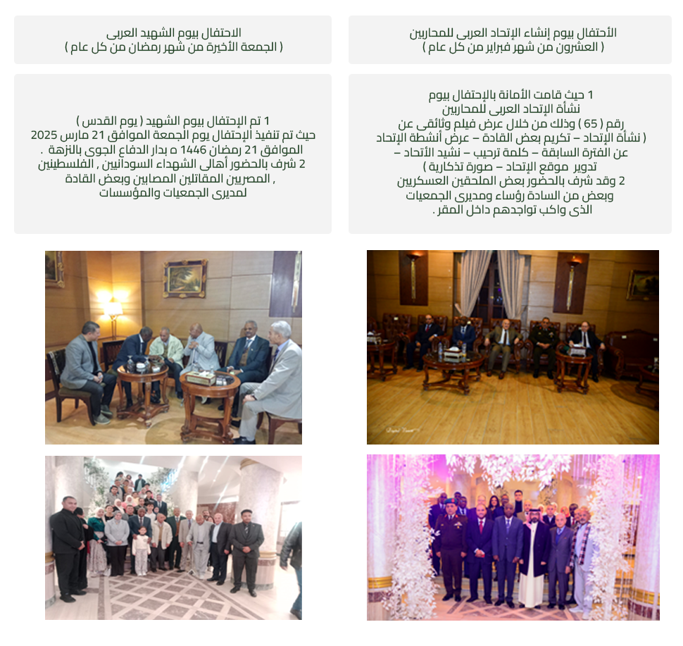
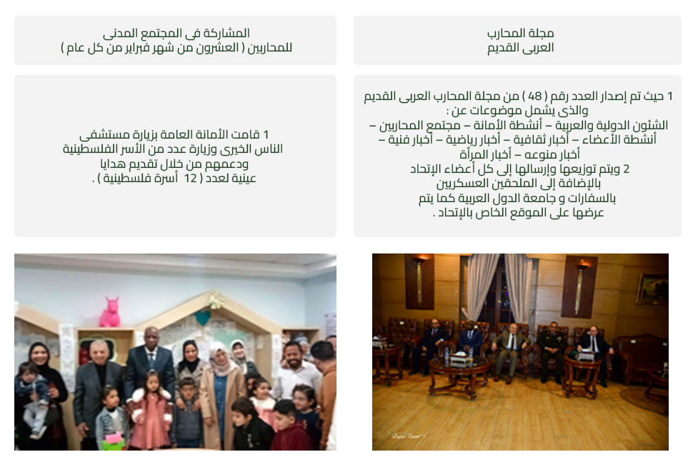
البند الثاني : الملامح الرئيسية للإستراتيجية العربية .
الاستراتيجية العربية الجديدة ، تبدأ من أول العام الحالى ويتم تقييمها سنوياً ( 2025 - 2026 - 2027 ) .
وتشمل الإستراتيجية العربية الجديدة ( 4 ) محاور رئيسية :-
المحور الأول :- الأمانة العامة للإتحاد العربى للمحاربين القدماء وضحايا الحرب .
المحور الثاني :- أعضاء الإتحاد العربى للمحاربين القدماء وضحايا الحرب .
المحور الثالث :- الجمعية العمومية للإتحاد العربى للمحاربين القدماء .
المحور الرابع :- تعظيم دور المحارب العربى القديم .
المحور الأول : ويشمل قيام الأمانة العامة للإتحاد العربى بالتخطيط والأعداد للإستراتيجية ومتابعة تنفيذها من خلال :-
1 - التنسيق بين الجمعيات والهيئات أعضاء الإتحاد لتنفيذ الأنشطة والأعمال المخططة والعمل على تحديثها وتطويرها لتواكب الهدف المرجو منها .
2 - التنسيق والتواصل مع الإتحادات الأخرى لخدمة وتحقيق أهداف الإتحاد والمحارب العربى القديم .
3 - دراسة مطالب ومقترحات أعضاء الإتحاد أثناء وبعد إنعقاد الجمعية العمومية والعمل على إيجاد الحلول المناسبة لها .
4 - زيارة المقاتلين المصابين والمحاربين المقيمين بدولة المقر لتلاقى العلاج بصفة دورية بالمجمعات والمستشفيات والمراكز الطبية وتقديم هدايا عينية .
5 - المشاركة فى الندوات التثيقيفية والإحتفالات القومية لأعضاء الإتحاد من المنظمات والهيئات .
6 - تخليد يوم إنشاء الإتحاد العربى للمحاربين القدماء وضحايا الحرب ( يوم العشرون من شهر فبراير من كل عام ) وإعداد تقرير عن الأعمال والأنشطة التى تم تنفيذها عن عام سابق .
7 - الإستمرار فى تطوير وتحديث مجلة المحارب العربى القديم لتواكب الأحداث الجارية والأعمال والأنشطة التى تقوم بها المنظمات لصالح المحارب العربى القديم .
8 - تفعيل صفحة الموقع الخاص بالإتحاد العربى بتحديث البيانات للأعضاء ةوعرض الأنشطة والأعمال التى تقدمها الجمعيات والمنظمات .
9 - مشاركة أمانة الإتحاد العربى فى المناسبات والأعياد القومية للمجتمع المدنى .
10 - تم إنضمام دولة البحرين إلى عضوية الإتحاد العربى حديثاً والسعى لإنضمام باقى الدول العربية التى لم تنضم ( تونس – جيبوتى – الصومال – جزر القمر ) وتفعيل تشكيل لجنة دائمة سياسية لذات الشأن .
11 - التواصل مع المنظمات والإدارات التى لم تشارك بالجمعية العمومية ( السعودية – الجزائر – سوريا – اليمن ) .
المحور الثاني : تفعيل مهام وواجبات وأهداف أعضاء الإتحاد من الهيئات والمؤسسات من خلال :-
1 - أهمية تنفيذ أعمال وأنشطة الجمعيات والهيئات والإدارات .
2 - تكريم أم مثالية من كل منظمة أثناء إنعقاد الجمعية العمومية بعرض قصة كفاحها وعملها والتوثيق بمجلة المحارب العربى القديم وبالموقع .
3 - تنفيذ مسابقات متنوعة فى المجالات ( التاريخية – الثقافية ) ويتم توزيع هدايا عينية للفائزين أثناء إنعقاد الجمعية العمومية أو فى مناسبات رئيسية .
4 - حث الباحثين من الجمعيات والمنظمات على تقديم أرائهم ومقترحاتهم لتفعيل وتنشيط الأداء وتحقيق أهدافهم .
المحور الثالث : أهمية وضرورة عقد الجمعية العمومية سنوياٌ لأهميتها ولإصدار القرارات المتعلقة بالأعضاء .
1 - وضع ألية ومعايير للأعضاء للحرص على تنفيذ الجمعية العمومية سنوياُ والالتزام بما تم الإتفاق عليه .
2 - إنتخاب / تجديد الأمانة العامة للإتحاد ( رئيس – النائبين – الأمين العام - الأمين العام المساعد – أمين الصندوق – المفوض المالى – اللجان المختلفة ) .
3 - مناقشة مشروعات القرارات المقدمة من أعضاء الإتحاد العربى من المنظمات والتصديق عليها .
4 - تعديل / إلغاء / دمج / تحديث بعض المواد باللائحة الأساسية للإتحاد العربى .
5 - التصديق على الميزانية التقديرية الجديدة .
6 - عرض تقرير الأمين العام – عرض تقرير أمين الصندوق .
7 - التواصل والتفاعل بين الأمانة العامة والأعضاء للإتحاد العربى .
8 - التكريم ( المصابين – الشهداء – الأم المثالية – الباحثين ) مناقشة القضايا العربية / مناقشة وتبادل الأراء والأفكار والمقترحات لتطوير الأداء / التعرف على الثقافات المختلفة .
9 - التصديق على أعضاء جدد .
المحور الرابع : تعظيم دور المحارب العربى القديم من خلال مزايا , خدمات مختلفة :-
1 - إصدار بطاقة المحارب العربى تحتوى على خدمات ومميزات ( تقديم علاج طبى متكامل – تحاليل – أشعة – إقامة وإعاشة – دورات تدريبية – تأهيل علمى يواكب العمل بالقطاع المدنى ) أثناء تواجده بدولة المقر .
2 - تفعيل يوم الشهيد العربى ( يوم القدس ) بإعداد وتجهيز إحتفال لتعظيم دور المحارب العربى القديم ( الجمعة الأخيرة من شهر رمضان ) .
3 - قيام أعضاء الإتحاد بتقديم خدمات ومميزات للمحارب العربى القديم أثناء تواجده بدولهم على غرار ما تم تقديمه بدولة المقر .
وخلال الجلسة الثانية : تم عرض تقرير أمين الصندوق و الموازنة التقديرية للعام 2025 /2026 م .
وخلال الجلسة الثالثة : تم عقد الإنتخابات .
و قامت الجمعية العمومية بإنتخاب ، لمدة ( 4 ) سنوات .
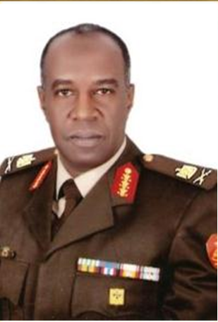
لواء أ . ح . م / خالد مصطفى توفيق
تم الانتخاب :-
رئيساً للإتحاد العربي للمحاربين القدماء .
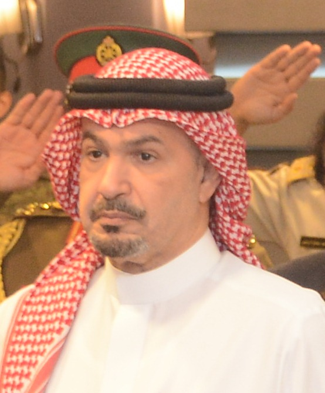
معالي الشيخ / صباح العبد لله الصباح
تم الانتخاب :-
نائباً أول لرئيس للإتحاد العربي للمحاربين القدماء .
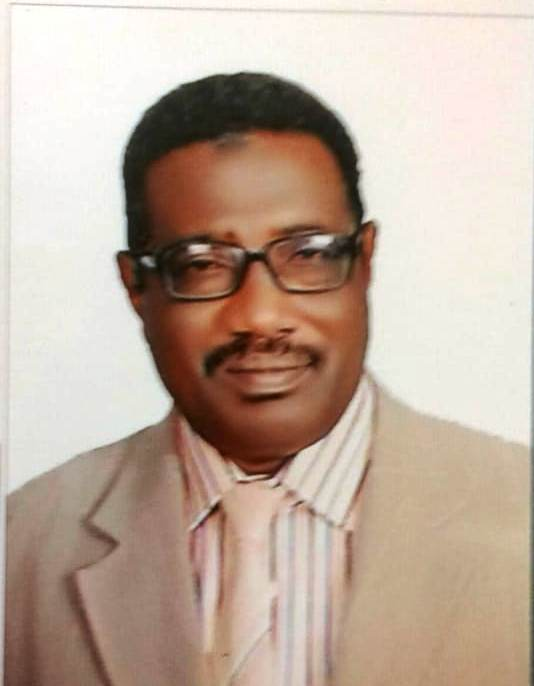
العميد / مكي محمد أحمد الكناني
تم الانتخاب :-
نائباً ثانياً لرئيس للإتحاد العربي للمحاربين القدماء .
كما قامت الجمعية العمومية : بإنتخاب الأمانه العامة للإتحاد ممثلة فى :-
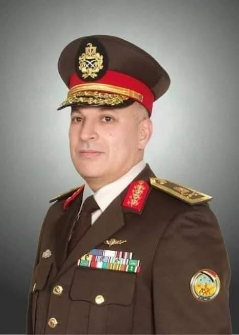
لواء . م / مصطفى أحمد مصطفى عميره
تم الانتخاب :-
أميناً عاماً للإتحاد العربي للمحاربين .
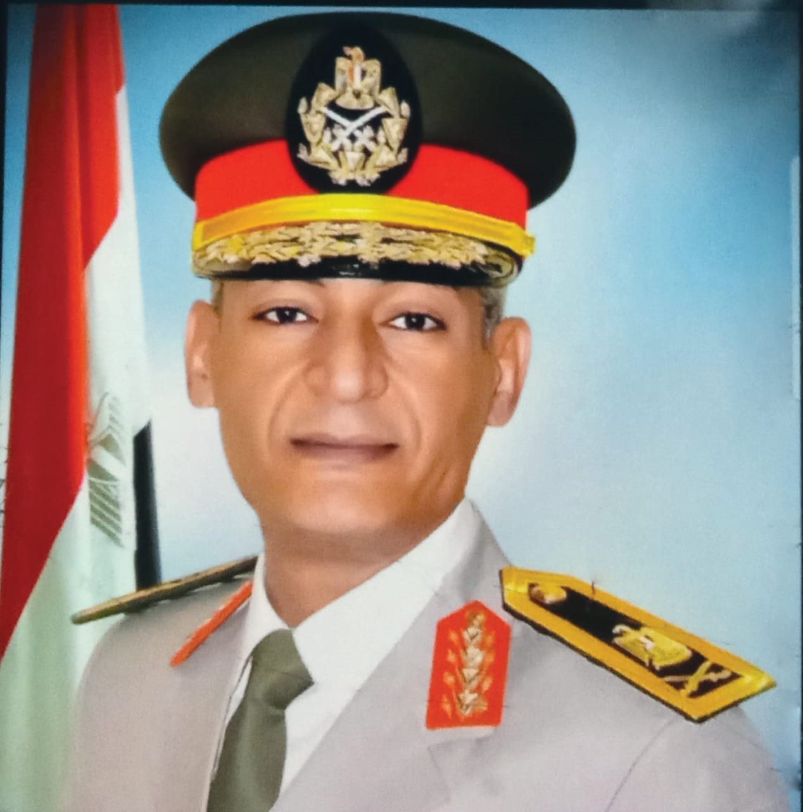
لواء . م / حازم حسن السيد بيومي
تم الانتخاب :-
أمين صندوق الإتحاد العربي للمحاربين .
كما قامت الجمعية العمومية : بإنتخاب المفوض المالى للإتحاد العربى للمحاربين :-
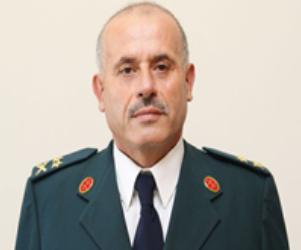
لواء ركن / نقولا مزهر
تم الانتخاب :-
كمفوض مالي للإتحاد العربي للمحاربين .
وتم خلالها أيضاٌ : تحديد مقررى الجلسات الفرعية ( أ. ب ) ، حيث تم تقرير اللجنة الفرعية ( أ ) الإدارية والإجتماعية .
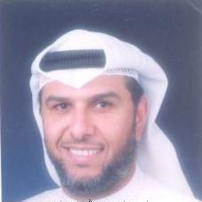
الســـــــــــــيد / فايز العنزى
رئيس اللجنة .
بحضور كلاً من :-
1- اللواء أ. ح . م / خالد مصطفى توفيق . . رئيس الإتحاد .
2- الأستاذة / مروة سعد خليل . . مقرر اللجنة .
وعضوية ( 16 ) عضو :-
1- لواء ركن / عدنان أحمد الرقاد ، دولة الأردن ( المؤسسه الاقتصادية للمتقاعين ) .
2- العقيد / عبدالله أحمد عبيد آل علي ، دولة الإمارات ( جمعية العسكريين للمتقاعين ) . .
3- الرائد / خالد حمد سيف العبري ، دولة الإمارات ( جمعية العسكريين للمتقاعين ) .
4- العقيد الركن / مبارك علي مبارك النعيمي ، دولة البحرين ( شعبة القوة الاحتياطية و المتطوعين ) .
5- العميد طيار / حمدتو حسن ، دولة السودان ( المؤسسه السودانية لقدامي المحاربين ) .
6- عميد الركن / علي بن سليمان بن علي الذهلي ، دولة سلطنة عمان ( الخدمات الاجتماعية العسكرية ) .
7- الرائد / يحيى بن سالم بن محمد الحوسني ، دولة سلطنة عمان ( الخدمات الاجتماعية العسكرية ) .
8- العميد / هشام داود عبدالهادي طعمه ، دولة فلسطين ( رابطة المحاربين القدماء ) .
9- عميد الركن / سويدان محمد الغيثاني ، دولة قطر ( لجنة التقاعد العسكري ) .
10- العميد / مصطفى مسلماني ، دولة لبنان ( رابطة قدماء القوى المسلحة ) .
11- العميد / حسن بشير عثمانلطيوش ، دولة ليبيا ( إدارة شئون الشهداء ) .
12- العميد / رضوان إبراهيم محمد الغراري ، دولة ليبيا ( إدارة المجاهدين ) .
13- لواء أ . ح / مدحت عبدالعزيز فاوي ، دولة مصر ( جمعية المحاربين القدماء ) .
14- السيد / يوسف بنرحو ، دولة المغرب ( المندوبية السامية ) .
15- السيد / أحمد بويقوشان ، دولة المغرب ( الجمعية الوطنية ) .
16- السيد / محمد سالم ولد اعلى ، دولة موريتانيا ( الرابطة الوطنية لتخليد بطولات المقاومة ) .
حيث تم تقرير اللجنة الفرعية ( ب ) قضايا عربية .
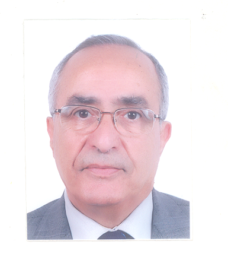
دكتور / مصطفى الكثيري
رئيس اللجنة .
بحضور كلاً من :-
1- اللـــــــــواء / مصطفى أحمد عميره . . الأمين العام الإتحاد .
2- السيد / حسن العجمى . . مقرر اللجنة .
- العميد / مكي محمد أحمد ، دولة السودان ( المؤسسه السودانية لقدامي المحاربين ) .
- العقيد الركن / محمد بن سليمان بن خميس الهطال ، دولة سلطنة عمان ( الخدمات الاجتماعية العسكرية ) . .
- السيد / وليد عطا الله أبو شعبان ، دولة فلسطين ( جمعية المحاربين القدماء ) .
- السيد / مصباح جمعة مصباح ، دولة قطر ( لجنة التقاعد العسكري ) .
- العميد بحري / أحمد يوسف محمد العبيدان ، دولة قطر ( لجنة التقاعد العسكري ) .
- لواء ركن / نقولا مزهر ، دولة لبنان ( رابطة قدماء القوى المسلحة ) .
- عميد ركن / خضر منصور ، دولة لبنان ( رابطة قدماء القوى المسلحة ) .
- العميد / أبو قاسم مفتاح أبو القاسم ، دولة ليبيا ( إدارة شئون الشهداء ) .
- العميد / سعد محمد سعد أبو قبة ، دولة ليبيا ( إدارة المجاهدين ) .
- العقيد أ . ح / طارق كامل ، دولة مصر ( جمعية المحاربين القدماء ) .
- السيد / الحبيب الحسيني ، دولة المغرب ( الجمعية الوطنية ) .
- السيد / محمد محمود ولد بكار ، دولة موريتانيا ( الرابطة الوطنية لتخليد بطولات المقاومة ) .
وفى نهاية اليوم الأول تم التحرك لتناول وجبة العشاء على الباخرة النيلية .
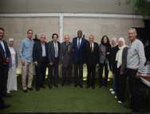
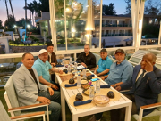
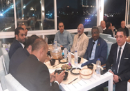
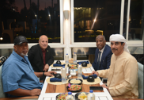
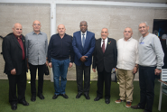
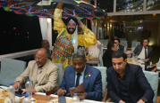
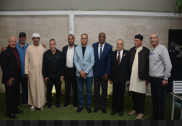
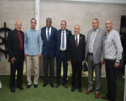
الدورة رقم ( 29 ) للجمعية العمومية للإتحاد العربى للمحاربين القدماء وضحايا الحرب .
فاعليات اليوم الثانى
2025/05/06
و تضمنت الجلسة الرابعة و الخامسة : القيام بأعمال اللجان الفرعية ( أ . ب ) .
حيث تشكلت اللجنة من ( أ ) الإدارية والإجتماعية :-
1- السيد / فايز عبد الله العنزى. . .رئيس اللجنة .
2- اللواء أ . ح .م/ خالد مصطفى توفيق. . ( رئيس الإتحاد) .
3- الاستاذة /مروة سعد خليل . . مقرر اللجنة .
وخلالها تم التصديق على ( 16 ) قرار وهم :-
عناوين القرارات المصادق عليها ( اللجنة أ ) الإدارية والإجتماعية .
1- تنظيم وتفعيل الاحتفال بيوم الشهيد العربي ( يوم القدس ) الجمعة الأخيرة من شهر رمضان سنوياً .
2- تجميد عضوية جمعية معاقي الحرب والواجب وأسر الشهداء اليمنية .
3- تطوير وتفعيل موقع الإتحاد .
4- بشأن تطوير مجلة المحارب العربي القديم باشتراك أعضاء الإتحاد لتقديم الأعمال والأنشطة والإنجازات كل 6 شهور .
5- دورية انعقاد الجمعية العمومية .
6- الأثار الاجتماعية و النفسية للحرب و اضطرابات ما بعد الصدمة كذلك المواكبة النفسية و المعنوية لقدماء المحاربين .
7- نشر الوعي و تنمة روح الولاء و الانتماء و حب الوطن العربي و الوحدة الوطنية لدى المجتمع العربي و خاصة الشباب العربي .
8- التعاون بين الجمعيات الأعضاء فيما يختص بتقديم التكنولوجيا الخاصة بأجهزة المعاقين من المحاربين القدماء .
9- إبراز قدرات القادرون بإختلاف .
10- من أجل ترسيخ الهوية الوطنية وتقوية الشعور بالانتماء الوطني لدى الفرد في العالم العربي عبر حفظ وصيانة الذاكرة التاريخية للشعوب .
11- تعزيز التعاون والشراكة والتعاضد بين مؤسسات الإتحاد العربي للمحاربين القدامي وضحايا الحرب ومنظماته العضوة رافعة للرقي الشامل بالأوضاع المادية والاجتماعية والصحية والمعنوية والتشريعية لقدماء المقاومين و قدماء المحاربين وضحايا الحرب في الوطن العربي .
12- قيادة المستقبل : تمكين بنات و أبناء الشهداء و قدماء المقاومين و المحاربين عبر برامج التشغيل الذاتي و العمل المقاولات و إشاعة و نشر ثقافة ريادة الأعمال .
13- ضرورة دعم صناديق وروابط جمعيات المحاربين القدماء .
14- بشأن موقف المنظمات المتأخرة عن سداد الإشتراكات السنوية .
15- تشكيل لجنة دائمة للشؤون السياسية .
16- تشكيل لجنة دائمة للشؤون الإدارية والمالية .
كما تشكلت اللجنة من ( ب ) قضايا عربية :-
1- السيد / مصطفى الكثيرى. . .رئيس اللجنة .
2- اللواء/ مصطفى أحمد عميرة . . .الامين العام للإتحاد .
3- السيد/ حسن العجمى. . مقرر اللجنة .
وخلالها تم التصديق على ( 7 ) قرار وهم :-
عناوين القرارات المصادق عليها ( اللجنة ب ) قضايا عربية .
1- التصدي لتهجير الشعب الفلسطيني بقطاع غزة والضفة الغربية وتهويد القدس الشريف .
2- تقديم الدعم الكامل والشامل للقيادة السودانية والشعب السوداني للحفاظ على أمن وسلامة السودان والخروج من الأزمه التى يمر بها .
3- تقديم الدعم الكامل و التضامن الشامل لجمهورية لبنان الشقيقة لمجابهة الاعتداءات الإسرائيلية داخل أرضيها وعد التزامها التام باتفاقية وقف إطلاق النار .
4- ضرورة وضع حد لهجرة الأدمغة العربية و الاستفادة منها داخل أوطانها .
5- حماية البنايات و المأثر التاريخية .
6- من أجل إبراز القدوة برسائل المقامة و الكفاح في العالم العربي و توجية الناشئة إلى التحلي بقيمها .
7- صون السيادة الوطنية و الحفاظ على الوحدة الترابية بالبلدان العربية مسئولية تاريخية .
ثم القيام بزيارة إلى الجمعية المصرية .
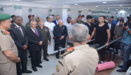
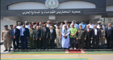
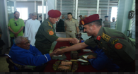
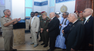
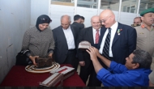
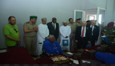
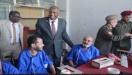
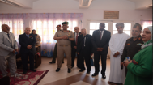
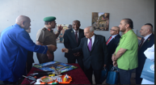
وفى نهاية اليوم الثانى : تم إقامة عشاء مجمع بالفندق .
فاعليات اليوم الثالث
2025/05/07
( الجلسة السادسة - الجلسة السابعة - الجلسة الثامنة - الجلسة التاسعة - الجلسة العاشرة ) .
وتضمنت الجلسة السادسةوالسابعة والثامنة :-
1- تم عرض تقارير اللجان الفرعية ( أ. ب ) وإتخاذ القرارات والتوصيات .
2- دراسة وتعديل فقرة فى اللائحة الأساسية للإتحاد .
صدقت الجمعية العامة على تعديل المادة ( 44 ) .
وقد تم إستكمال الإنتخابات وذلك من خلال تشكيل لجنة لإنتخاب اللجنة الدائمة للشئون الأدارية والمالية و اللجنة السياسية .
حيث تم تشكيل لجنة مكونة من :-
1- رئيس اللجنة : لواء أ.ح / مدحت عبد العزيز فاوى .
2- العضو الأول : العمـــيد / مصطفى مسلمانى .
3- العضو الثاني : الســيد /محمد سالم ولد اعلى .
وقد تم إنتخاب كل من : اللجنة الدائمة للشئون الادارية والمالية :-
وعددهم ( 4 ) أعضاء برئاسة اللواء أ . ح . م / خالد مصطفى توفيق . . رئيس الاتحاد .
( لمدة 4 سنوات )
1- العمــــيد /حسن بشير عثمان لطيوش . . ليبيا ( نائب رئيس اللجنة ) .
2- الســــــيد/ حســـــن العجمى . . . الكويت ( مقرر اللجنة ) .
3- السيد / أحمد بويقشـــــــــان . . . المغرب .
4- العمــــيد /هشام داود عبد الهادى . . . فلسطين .
اللجنة الدائمة للشئون السياسية :-
وعددهم ( 4 ) أعضاء برئاسة السيد / محمد محمود ولد بكار .
( لمدة 4 سنوات )
1- لواء أ. ح . م / خـــالد مصطفى توفيق. . . رئيس الإتحاد .
2- اللـــــــــواء / رضوان ابراهيم محمد الغرارى . . . ليبيا .
3- العميد طيار /حمدتو حســــن إبراهيم . . . السودان .
4- الســــــــيد / يوســــف بنرحو . . . . . . المغرب .
عرض أنشطة وأعمال وإنجازات أعضاء الإتحاد ( المملكة الأدرنية الهاشمية ) .
وتضمنت الجلسة التاسعة : صدقت الجمعية العمومية على قيام الامانة بمخاطبة سلطنة عمان لموافاتها بمقترح عقد الدورة رقم (30) خلال العام الأول 2026 وذلك طبقاً للترتيب سلطنة عمان نفذت دورة واحدة عام 2007 .
سلطنة عمان :-
1- السيدة/ فاطمة بنت مسلم بن محمد المعشلى .
2- السيدة/ شمساء بنت اسحاق بن شاهين البلوشية .
المغرب :- المندوبية السامية لأعضاء جيش التحرير .
- المرحومة / فاطمة سقيم. . مقاومة .
فلسطين :- رابطة مقاتلى الثورة الفلسطينية .
- السيدة/ نجاح عبد الفتاح حسين . . رائد متقاعد .
بالإضافة إلى تكريم الأم المثالية الفلسطينية .
حيث صدقت الجمعية العمومية : على منح السيدة /منال حسين عبدالرؤوف ابو شعبان. . من جمعية المحاربين القدماء الفلسطينية ( دولة فلسطين ) .
وقد تم منح سيادتها جائزة مالية قدرها الف دولار بالإضافة إلى نوط الإتحاد وهدية وشهادة تقدير .
هى أم شريف أبوشعبان - إمرأة عادية فى ظاهرها ولكن فى قلبها وطن . أم لأربعة شباب وسندهم الوحيد بعد أن غاب الأب عام 2019 م - عاشت حروباُ متتالية من 2008 حتى اليوم تحملت الجوع والوجع وإنقطاع الكهرباء والدواء - فى 23 مارس 2024 دخل الجيش الإحتلال إلى بيتها أعتقل أبنائها الأربعة أمام عينيها ثم أحرق البيت ولم يترك شيئاً - عاد أولادها الثلاثة وأحدهم عليه أثار تعذيب والضرب ثم جاءها الخبر بأعدام الرابع بدم بارد وأحتسبته عند الله مع النبيين والصديقين والشهداء .
وخلال الجلسة العاشرة تم تكريم الأبطال المصابين المقاتلين .
تم تكريم عميدأ.ح / محمودعلى عبده هلال. . مصاب العمليات الأرهابية بسيناء
بسلاح المشاة أصابة باليد اليسرى .
م تكريم نقيب / أحمد محمد عبد اللطيف . . مصاب العمليات الأرهابية بسيناء ( الإصابة بترفى الساق اليسرى ) .
تم تكريم نقيب . م / محمود سامح محمود المنصورى. . مصاب العمليات الأرهابية بسيناء ( الإصابة شظايا بالضهر و الكتف ) .
تم تكريم مجند/هيثم عادل .. مصاب العمليات الارهابيه بسيناء ( الاصابه في النخاع الشوكي ) .
تم تكريم جندى / أبوالحمد عبد القادر أبو الحمد. . مصاب العمليات الأرهابية بسيناء ( الإصابة بترالأطراف تحت الركبة الشمال والذراع الأيمن ) .
أيضاُ خلال الجلسة تم تكريم الباحثين بشهادات شكر وتقدير .
وقد تم تبادل الهدايا بين الأعضاء .
وفى نهاية اليوم تم زيارة إلى المتحف المصري الكبير .